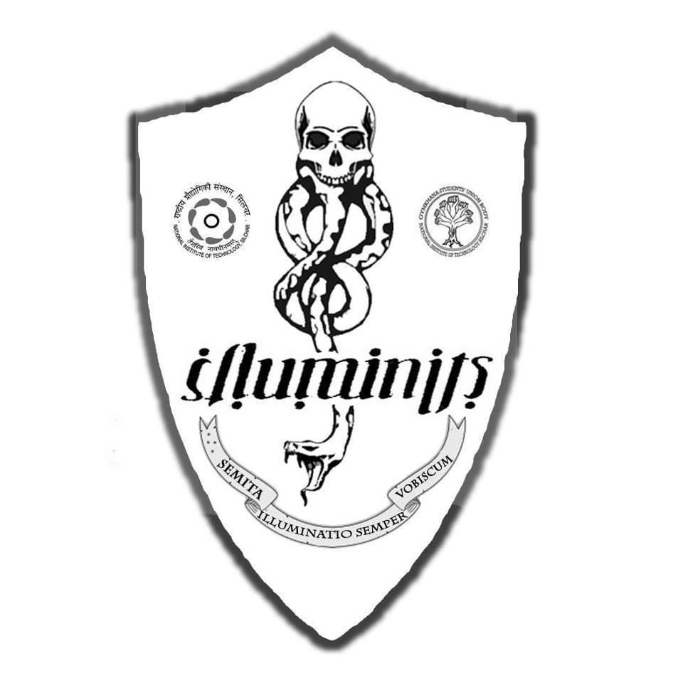
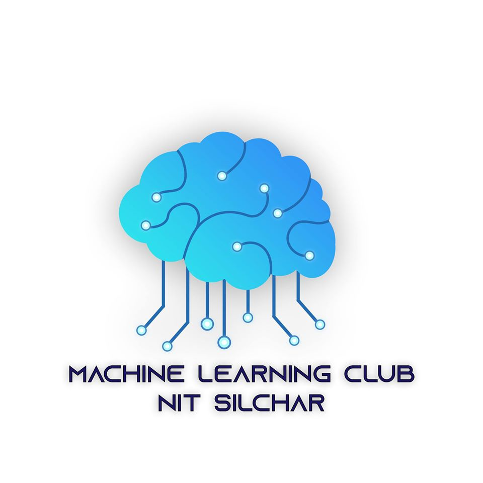
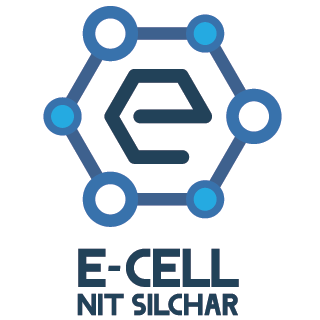

GUB
GUB
Societies Under Gymkhana
Sports Club Under GUB

Cricket Club
NITS Cricket Club, of which the official cricket team representing NIT Silchar is a subset of, comprises of young and budding sports enthusiasts and individuals who together have brought several glories to the Institute. Each year this team participates in some major National Level Tournaments organised in various NITs and IITs. The team focuses mainly on promoting sportsmanship and love among this beautiful family.Trekking, Mountaineering, Skating, and Karate
The pleasure of exploration is one of the very few aesthetic pleasures of life. The trekking, mountaineering, skating and karate club is the home to.the exploration freaks of NIT Silchar. The members have secured accolades in numerous events and have travelled to and conquered numerous peaks in the North East and even other parts of India.Cultural Club Under GUB

Advay: Dramatics Club
"There are more things on Heaven and Earth, Horatio; than are dreamt of in your philosophy." What is life without a little drama? Advay is the place for you if you express yourself with your expressions. Let the spark within you run wild, and set the stage on fire. Advay trains the students in the field of dramatics and teaches them to harness their emotions and express them in front of the spotlight.

Illuminits: Literary, Publications And Fine Arts Society
Illuminits provides a relaxing and interactive environment while giving the students a platform to hone their fine arts and literary skills both in national and vernacular languages. Every year, Illuminits grooms individuals and helps them overcome their fear of literary feats, boosting up their confidence be it speaking skills, creative writing, journalism, quizzing, design or arts so they may leave the college as professional and trained individuals that the corporate world demands.
Obiettivo: Photography Club, NIT Silchar
With a page reach of almost 13,000, Obiettivo is one of the most successful clubs amongst the NITs. Obiettivo is responsible for capturing all the important moments in the institution. From the fresher’s party to farewell, Obiettivo has it all covered. Obiettivo has been the home to both globally and nationally recognized photographers.Gyansagar
"And somewhere there are engineers Helping others fly faster than sound. But, where are the engineers Helping those who must live on the ground?" Young Oxfam Poster With all the technical and nontechnical clubs and societies meant solely for the students of the institution, Gyansagar is in turn an initiative of the students of the institution to give back to the society. We at NIT Silchar believe that every small step matters. Gyansagar carries out donation drives and provides free education facilities to the needy inside and around the campus.Dance Club
NSD or NIT Silchar Dance Club club is one of the most prominent clubs of NIT Silchar with over 50 dancers associated with it and numerous other dance enthusiasts. The main event falling under NSD are Flashmob, the promotional event of Incandescence and the representation of NIT Silchar in Springfest IIT Kharagpur. Every year the club nurtures people who participate in the Dance Workshop for all alike. Apart from this NSD began the culture of Let's Nacho and Talent Hunt to make people leave their comfort zones with ease.
Music Club
NIT Silchar is a place where talents of all kinds are appreciated. Where our academics demand us to be precise as engineers, the music club of NIT SIlchar is where you can let your imagination run free. For the musicians, the music club organizes regular training and jamming sessions to shape the students into better musicians.
Technical Club Under GUB

N.E.R.D.S. - NIT Silchar Embedded and Robotics Development Society
With the exponential growth in the influence of robots in corporate and industrial worlds, NIT Silchar is also on its way to leave its footprint on the innovator community. N.E.R.D.S trains the students in the domain of robotics and embedded systems and making them into the world class innovators of tomorrow.Coding Club
Almost everything today runs on code. Coding is one of the most essential skills for an engineer. With the same outlook in mind, coding club strives to teach the students to code. It trains students in the commonest languages from beginner to advanced levels. NIT Silchar proudly flaunts some of the best coders in the nation.

Machine Learning Club
Artificial Intelligence is no longer something only limited to the cinematic universe. With every passing day, it is developing, that too rapidly. The Machine Learning Club of NIT Silchar aspires to keep up with this trend and teach the students the basics of this evolving technology.
Developer Student Club
Every big innovation starts with an idea. The Developer Student Club of NIT Silchar helps you with the execution of your ideas. Inspiring and coaching the next generation of Musks and Zuckerbergs, the Developer Student Club is the place for you if you have the urge to leave your footprint on the webAutomobile Club
The automobile club is composed of individuals brought together by their passion for automobiles. The club takes part in various competitions and is in charge of the development of T.W.R.A.N. After the successful completion of the first iteration of TWRAN, the team is all geared up for the second iteration.
